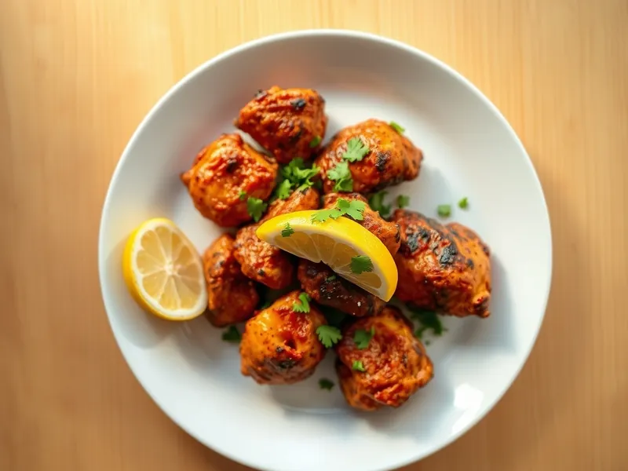

Курица тандури на сковороде
Кусочки курицы в йогурте с паприкой, куркумой и чесноком, обжаренные до тёмно-красной корочки
30 мин3 порц.488 ккал на порциюБ 39 · Ж 34 · У 6Интернациональная кухня
Открыть в приложении: порции, таймеры, список покупок
Продукты на 3 порц.
- Куриные бёдра5 шт
- Йогурт без добавок150 г
- Чеснок2 зуб.
- Имбирь10 г
- Паприка2 ч. л.
- Куркума0,5 ч. л.
- Зира0,5 ч. л.
- Лимон0,5 шт
- Растительное масло1,5 ст. л.
- Соль1 ч. л.
- Острый перец молотый по желанию1 щеп.
- Кинза по желаниюпо вкусу
Как готовить
- Филе бедра нарежьте кусками по 4 см и сделайте на каждом пару неглубоких надрезов.
- Смешайте йогурт с тёртыми чесноком и имбирём, паприкой, куркумой, зирой, острым перцем, солью и соком половины лимона. Перемешайте курицу с маринадом и оставьте на 10-15 минут, пока греете сковороду.
- Разогрейте сковороду-гриль или обычную сковороду с маслом на сильном огне. Стряхните с курицы лишний маринад и выложите кусочки в один слой.
- Жарьте 4-5 минут не трогая, пока снизу не появится тёмно-красная корочка с подпалинами. Переверните и жарьте ещё 4-5 минут.
- Убавьте огонь до среднего, накройте крышкой и доведите 3 минуты, пока сок на разрезе не станет прозрачным. Посыпьте кинзой и подавайте с дольками лимона.
Совет. Не перегружайте сковороду: если курица лежит тесно, она тушится в соку и не даёт корочки. Жарьте в два захода.